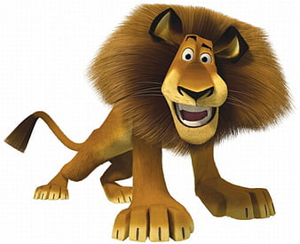

Bears are heavily built, short-tailed mammals with large skulls and strong jaws. They have large, strong paws with long claws.
The giraffe is the tallest of all mammals. It reaches an overall height of 18 ft (5.5 m) or more. The legs and neck are extremely long. The giraffe has a short body, a tufted tail, a short mane, and short skin-covered horns.
Lions have strong, compact bodies and powerful forelegs, teeth and jaws for pulling down and killing prey. Their coats are yellow-gold, and adult males have shaggy manes that range in color from blond to reddish-brown to black. The length and color of a lion's mane is likely determined by age, genetics and hormones.
The presence of a tail (even if only a tiny nub), along with their narrow-chested bodies and other features of the skeleton, distinguishes monkeys from apes. Most monkeys have a short, relatively flat face without great prominence of the muzzle, although baboons and mandrills are notable exceptions.
The American alligator is a large crocodilian with an armored body, short legs, a muscular tail and a long, rounded snout.